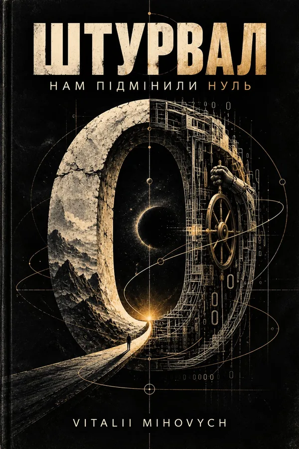

Алгоритми, які допомагають приймати рішення, рано чи пізно залишають тебе перед парадоксальним вибором. Чи готовий ти віддати управління власним життям на розсуд зовнішніх факторів?
Придбати книгу
Вона не приходить як ворог. Вона приходить як відповідь на людське бажання помилятися менше.
Спочатку система допомагає.
Потім передбачає.
Потім рекомендує.
А далі — визначає межі можливого.
І питання вже не тільки в тому, чи довіряєш ти системі.
Питання в тому, чи помітиш ти момент, коли перестанеш обирати сам.